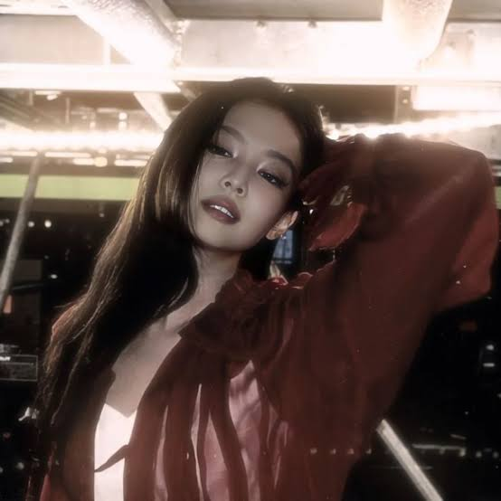
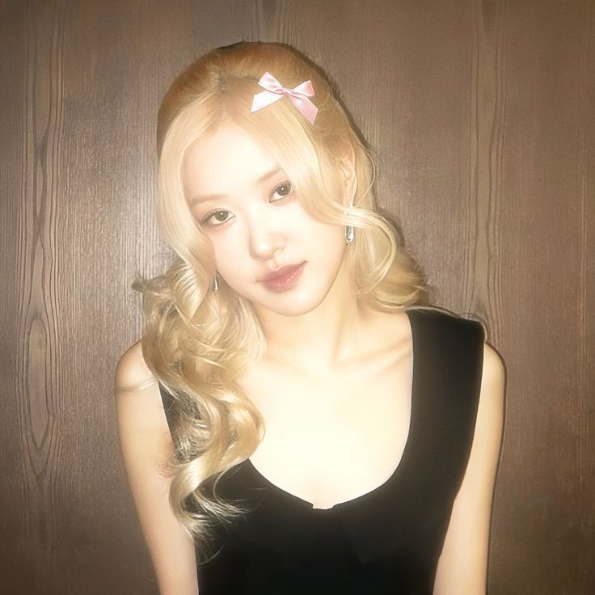
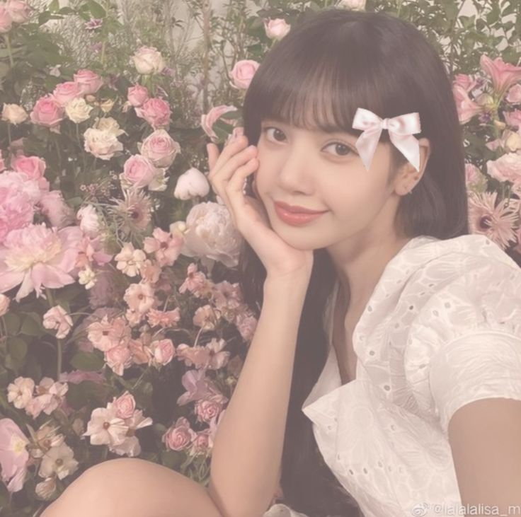

Tus artistas favoritos
Elige uno para darle vuelta a las tarjetas
Jisoo
Nació el 3 de enero de 1995. Tiene una personalidad muy divertida y espontánea, ama los videojuegos y es conocida como "Turtle Rabbit Kim". Aunque le teme las alturas, suele ser la más valiente y serena ante situaciones de alta tensión..

JennieJennie
Nació el 16 de enero de 1996. Vivió varios años en Nueva Zelanda, lo que le otorga una fluidez impecable en inglés.
Pese a proyectar una presencia imponente en el escenario, en su día a día es sumamente tierna, tímida y protectora con sus mascotas.

RoséRosé
Nació el 11 de febrero de 1997. Creció en Melbourne, Australia, tras nacer en Nueva Zelanda, manteniendo un fuerte vínculo con su cultura occidental.
Además de cantar, posee gran destreza tocando la guitarra y el piano, destacando por ser zurda en múltiples facetas.

LisaLisa
Originaria de Tailandia, hizo historia al convertirse en la primera artista extranjera en debutar bajo la agencia YG.
Fuera de los escenarios, es una apasionada de la fotografía, ama profundamente a los gatos y atesora una gran colección de cámaras.
 Feid
FeidFeid
Salomón Villada. Antes de ser famoso, empezó escribiendo éxitos mundiales para otros grandes artistas como J Balvin ("Ginza") y Reykon ("Secretos").
El nombre artístico "Ferxxo" nació porque su colega *Sky Rompiendo* comenzó a llamarlo así combinando su nombre Salomón con una jerga cercana.
 Tema 1
Tema 1Feid, ATL Jacob - Luna
 Tema 2
Tema 2Feid, Young Miko - Classy 101
 Tema 3
Tema 3